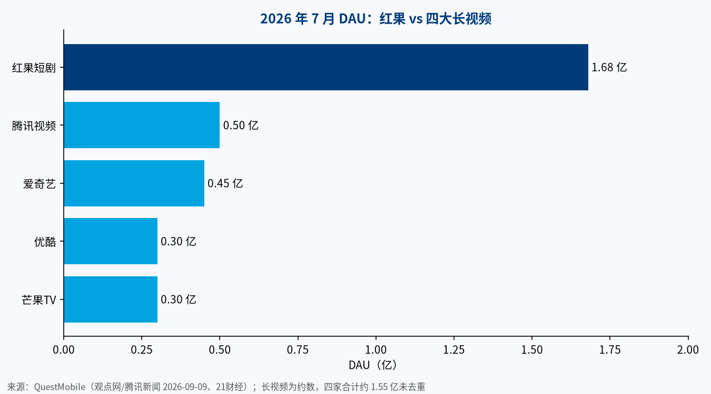

同一份数据，两种结论。秦朔写《可怕的红果与中国互联网的字节时间》，担心算法吃掉人们的时间；程苓峰写《肉鸡时间》，认为 AI 短剧才是真正的“核爆”。抖音副总裁李亮则说“字节时间”不严谨。本文先核数字，再补一个他们没谈的角度：AI 短剧对算力的拉动，以及东南亚的位置。
一、核心判断
| # | 判断 | 来源 | 置信度 |
|---|---|---|---|
| 1 | 字节系时长份额领先腾讯系，差距一年内从约 3 个点拉到约 13 个点，但口径只是移动端 Top50 App | 野村援引 QuestMobile（duan.cn、凤凰网） | 中（二手转述） |
| 2 | 红果赢在单用户时长，不在用户数 | QuestMobile（腾讯新闻） | 中 |
| 3 | 供给爆炸的主力是 AI 剧 | 广电总局（新华网） | 高 |
| 4 | 刹车已出现：监管新规 + 红果下线金币 | 新华网、红果公告 | 高 |
| 5 | AI 短剧正在变成视频生成模型的大客户 | 21世纪经济报道 | 中 |
二、数字核对
| 指标 | 数值 | 时间 | 来源 | 置信度 |
|---|---|---|---|---|
| 字节系 Top50 时长份额 | 40.9% | 2026-07 | 野村/QuestMobile | 中 |
| 腾讯系 Top50 时长份额 | 29.1% | 2026-07 | 野村/QuestMobile | 中 |
| 字节系 Top50 时长份额 | 33.6% | 2025-07 | 野村/QuestMobile | 中 |
| 腾讯系 Top50 时长份额 | 30.9% | 2025-07 | 野村/QuestMobile | 中 |
| 字节系 Top50 时长份额 | 41.8% | 2026-08 | 秦朔引野村，新浪科技 | 中 |
| 腾讯系 Top50 时长份额 | 28.6% | 2026-08 | 同上 | 中 |
| Top50 App 占移动互联网总时长 | 93% | — | 秦朔引野村，界面 | 中 |
| 红果 DAU | 1.68 亿 | 2026-07 | QuestMobile | 中 |
| 红果 DAU 同比 | +107% | 2026-07 | QuestMobile | 中 |
| 红果 MAU | 3.68 亿 | 2026-06 | QuestMobile，快科技/凤凰网 | 中 |
| 红果人均单日时长 | 125 分钟 | 2026-02 | QuestMobile | 中 |
| 红果人均单日时长 | 约 151 分钟 | 2026Q3 | QuestMobile，快科技/凤凰网 | 中 |
| 微信 DAU | 9.31 亿 | 2026-07 | 野村，华尔街见闻 | 中 |
| 抖音 DAU | 7.14 亿 | 2026-07 | 同上 | 中 |
| 前 8 月上线微短剧 | 43 万部 | 2026-01~08 | 广电总局 | 高 |
| 其中 AI 剧占比 | 超 90% | 2026-01~08 | 广电总局 | 高 |
| 2025 全国电影票房 | 518.32 亿元 | 2025 | 国家电影局 | 高 |


注意两点口径： - 时长份额的分母是移动端 Top50 App，不含长尾和 PC，野村自己注明是“追踪估算”（李亮语，新浪科技）。 - QuestMobile 的 DAU 是“当天打开过”，红果的签到、领金币也计入（21财经）。
“红果年入 400 亿”不实：红果 10 月 27 日声明，网传 400 亿、420~450 亿收入数据不实（快科技/凤凰网）。本文不采用任何红果收入数字。
三、秦朔：红果是一台时间吸收器
秦朔的四个解释：每集 1~3 分钟、集集留钩子的算法；AI 带来的海量供给；抖音切片导流 + 番茄小说提供原著的生态；免费看、靠广告分账。他担心的是代价：每天两小时，读书、思考、陪家人的时间少了。他预计短剧走向 K 型，底层是海量 AI 爽剧，顶层是少量真人精品。（观点来源：虎嗅原文）
四、程苓峰：看速度，AI 短剧是另一种东西
程苓峰的“三低合一”：番茄网文省剧本成本，Seedance 省拍摄成本，抖音流量省拉新成本。他把真人短剧和 AI 短剧分开看：前者是用户拍的碎片，后者是“懂行编剧 + AI”做出的上百集行业百科。他预计下一步分成两条路：免费娱乐加广告，和收费的因材施教。（观点来源：公众号“神在吗”《肉鸡时间》，10-28）
五、抖音的反驳
李亮的要点（新浪科技、界面）： - 只算移动端 Top50，不是“中国互联网时长”。 - 41.8% 不到《反垄断法》二分之一的推定标准。 - 短剧、短视频是充分竞争行业，并称腾讯短剧、短视频增速远超抖音和红果（未给数据）。
秦朔回应：Top50 已占移动互联网时长 93%，“字节时间”是对注意力流向的概括（凤凰网）。
六、刹车
| 事件 | 日期 | 内容 | 来源 |
|---|---|---|---|
| 《微短剧发展管理办法》施行 | 2026-09-01 | AI 生成微短剧每集明显位置加标识 | 新华网 |
| 违规治理 | 2026 年以来 | 下架违规微短剧 6.8 万部，九成以上出自 AI 剧 | 同上 |
| 红果新用户无金币 | 2026-11-01 起 | 新激活用户不再有金币入口 | 红果公告 |
| 红果全面下线金币 | 2026-12-31 前 | 停止发放，已得金币和余额不受影响 | 同上 |
金币下线后，日活和时长会不会回落，是 QuestMobile 下几期数据最该看的指标。
七、我的角度：AI 短剧是一笔算力账
- 视频生成按 token 计价，短剧是大客户。 火山引擎 Seedance 2.0 mini 图生视频 0.023 元/千 tokens，720P 约 0.5 元/秒，比标准版低约 50%（21世纪经济报道，2026-06-17，置信度：高，官方定价）。
- 调用量在涨。 同一报道称火山引擎 Token 日均消耗每月增长近 40%，短剧和商业短视频持续带动，Seedance 2.0 贡献大部分增量；“单月创收破 10 亿”为行业消息（置信度：低）。
- 供给数据对得上。 中国网络视听协会：2026Q1 上线微短剧约 12.8 万部，AI 微短剧约 12.2 万部（同上，二手，中）；广电总局：前 8 月 43 万部、AI 超九成（高）。
- 含义。 降价让同一部剧可以先批量生成几十版初稿再精修，生成次数随之上升。降价换量，推理算力需求跟着内容产量走，而不是跟着观众数走。这是推断，没有公开数据直接验证。
八、东南亚：最像中国的短剧市场
| 指标 | 数值 | 时间 | 来源 | 置信度 |
|---|---|---|---|---|
| 东南亚短剧 App 下载量 | 近 8700 万次 | 2025Q1 | 澎湃号（引第三方） | 低 |
| 下载量环比 | +61% | 2025Q1 | 同上 | 低 |
| 占全球短剧下载 | 30% | 2025Q1 | 同上 | 低 |
| 占全球短剧内购收入 | 超 10% | 2025H1 | 同上 | 低 |
- 东南亚付费意愿低、偏广告变现，内容仍高度依赖中国输入；字节 2024 年底推出面向东南亚的短剧 App Melolo（同上，低）。
- 平台已用 AI 翻译、配音把一部剧改成泰语、印尼语、越南语版本（同上，低）。
- 推断：红果的“免费 + 广告 + AI 供给”模式比 ReelShort 式付费模式更贴合东南亚；本地 AI 生成和配音也会带来区域推理需求。没有公开数据直接验证。
九、结论
- 数据层面：字节系领先是事实，“字节时间”是概括，不是垄断认定。
- 产业层面：AI 剧已占新上线微短剧九成以上，短剧正在变成视频生成模型的大客户。
- 变量：金币下线和 AI 标识新规后的时长数据；东南亚能否复制免费模式。
本文仅为信息整理，不构成任何投资建议。